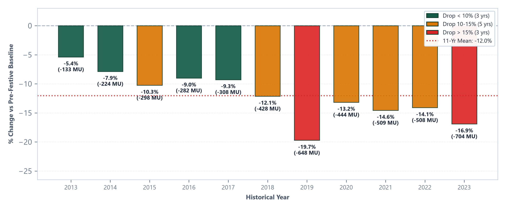
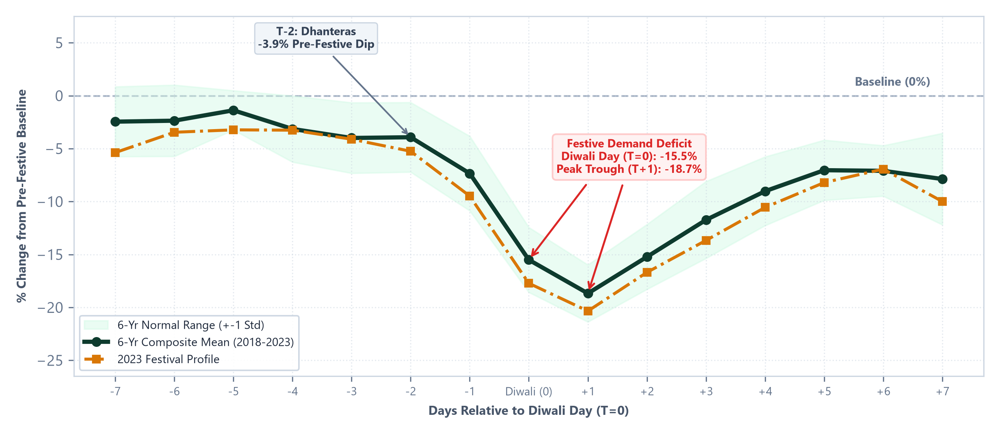
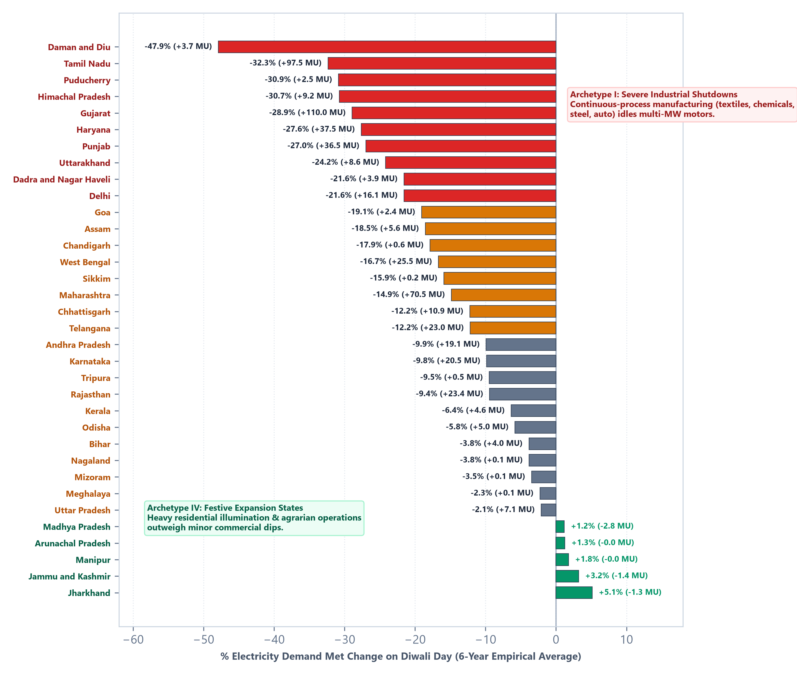
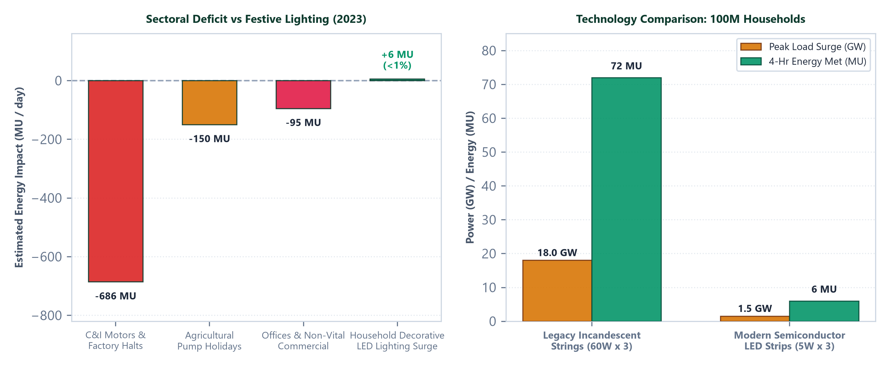

Empirical Decadal Synthesis, Structural Contraction Archetypes, and EHV Voltage Stability Dynamics
An entrenched public intuition presumes that the festival of Diwali—celebrated nationwide as the "Festival of Lights"—triggers an acute surge in electrical consumption due to millions of decorative illumination fixtures across residential and commercial buildings. However, empirical telemetry across 3,955 daily observations (2013–2023) from the National Load Despatch Centre (Grid-India / NLDC) proves the opposite: Diwali represents the single deepest, most pervasive annual demand contraction on the Indian power system.
Across all 11 analyzed historical years, national electricity met plummeted without exception on Diwali day, registering an average baseline contraction of -12.01% (σ = 4.41%) on festival day (T=0), and reaching an even deeper trough of -18.68% (σ = 2.69%) on T+1 (Govardhan Puja / Gujarati New Year). The absolute scale of this lost energy has expanded dramatically alongside national industrialization—scaling from -132.5 MU in 2013 to a record -703.5 MU on Diwali day in 2023 (and -813.7 MU on T+1).
| Year | Diwali Date | Baseline (MU) | Diwali Day Met | Net Deficit | % Contraction | T+1 Met | T+1 % Dip |
|---|---|---|---|---|---|---|---|
| 2013 | 2013-11-03 (Sun) | 2464.9 MU | 2332.4 MU | -132.5 MU | -5.38% | 2299.0 MU | -6.73% |
| 2014 | 2014-10-23 (Thu) | 2844.0 MU | 2620.2 MU | -223.7 MU | -7.87% | 2566.2 MU | -9.77% |
| 2015 | 2015-11-11 (Wed) | 2901.3 MU | 2603.8 MU | -297.6 MU | -10.26% | 2561.8 MU | -11.70% |
| 2016 | 2016-10-30 (Sun) | 3124.7 MU | 2843.1 MU | -281.7 MU | -9.01% | 2786.8 MU | -10.81% |
| 2017 | 2017-10-19 (Thu) | 3314.4 MU | 3006.6 MU | -307.8 MU | -9.29% | 2897.1 MU | -12.59% |
| 2018 | 2018-11-07 (Wed) | 3531.0 MU | 3102.5 MU | -428.5 MU | -12.13% | 2989.1 MU | -15.35% |
| 2019 | 2019-10-27 (Sun) | 3287.4 MU | 2639.1 MU | -648.3 MU | -19.72% | 2570.7 MU | -21.80% |
| 2020 | 2020-11-14 (Sat) | 3374.4 MU | 2930.0 MU | -444.4 MU | -13.17% | 2732.7 MU | -19.02% |
| 2021 | 2021-11-04 (Thu) | 3497.5 MU | 2988.2 MU | -509.3 MU | -14.56% | 2863.6 MU | -18.13% |
| 2022 | 2022-10-24 (Mon) | 3602.3 MU | 3094.0 MU | -508.3 MU | -14.11% | 3030.6 MU | -15.87% |
| 2023 | 2023-11-12 (Sun) | 4161.0 MU | 3457.5 MU | -703.5 MU | -16.91% | 3347.3 MU | -19.56% |

Tracking the 15-day window centered on Diwali reveals that the demand contraction is not an instantaneous anomaly confined to festival night, but a structured multi-day macroeconomic cycle spanning three distinct phases: (1) Pre-Festive Manufacturing Wind-down, (2) Deep Festive Idling, and (3) Asymmetric Staggered Recovery.

| Offset | Festive Milestone | Mean Change (%) | Std Dev | Observed Range | Operational Milestone |
|---|---|---|---|---|---|
| T-7 | T-7: Baseline Pre-Festive Window | -2.45% | ±3.30% | [-8.5%, +0.2%] | Operational Stage |
| T-6 | T-6: Early Festive Shopping Ramp | -2.36% | ±3.37% | [-8.2%, +1.9%] | Operational Stage |
| T-5 | T-5: Pre-Festive Commercial Peak | -1.38% | ±1.86% | [-3.2%, +2.1%] | Operational Stage |
| T-4 | T-4: Logistics & Dispatch Peak | -3.15% | ±3.12% | [-7.8%, +1.8%] | Operational Stage |
| T-3 | T-3: Pre-Dhanteras Wind Down | -4.00% | ±3.33% | [-9.6%, +1.2%] | Operational Stage |
| T-2 | T-2: Dhanteras (Initial Factory Halts) | -3.93% | ±3.28% | [-10.4%, -0.6%] | First Maintenance Halts |
| T-1 | T-1: Choti Diwali / Narak Chaturdashi | -7.35% | ±3.52% | [-14.1%, -3.6%] | Operational Stage |
| T+0 | T=0: Diwali Day / Lakshmi Puja | -15.51% | ±3.06% | [-21.2%, -12.2%] | Festival Day Contraction |
| T+1 | T+1: Govardhan Puja / New Year (Deepest Trough) | -18.68% | ±2.69% | [-23.2%, -15.4%] | Peak National Dip |
| T+2 | T+2: Bhai Dooj (Sustained Low) | -15.23% | ±3.06% | [-19.7%, -10.6%] | Operational Stage |
| T+3 | T+3: Early Industrial Staggered Restart | -11.73% | ±3.63% | [-16.7%, -5.3%] | Operational Stage |
| T+4 | T+4: Mid-Week Factory Resumption | -9.02% | ±3.24% | [-13.7%, -3.1%] | Operational Stage |
| T+5 | T+5: Weekend Stabilization Phase | -7.04% | ±2.84% | [-12.4%, -3.0%] | Operational Stage |
| T+6 | T+6: Secondary Workweek Normalization | -7.10% | ±2.38% | [-12.0%, -5.1%] | Operational Stage |
| T+7 | T+7: Full Grid Baseload Restoration | -7.87% | ±4.32% | [-14.9%, -2.1%] | Operational Stage |
National aggregation obscures immense geopolitical divergence. Across India's 34 monitored states and Union Territories, the Diwali demand impact diverges along structural economic boundaries—ranging from severe collapse in heavy manufacturing hubs (-47.90% in Daman & Diu) to net positive festive load growth in rural/agrarian states (+5.14% in Jharkhand).

| State / Entity | Base | Diwali | Delta | % Drop |
|---|---|---|---|---|
| Daman and Diu | 7.6 | 4.0 | +3.7 | -47.9% |
| Tamil Nadu | 300.5 | 203.1 | +97.5 | -32.3% |
| Puducherry | 8.1 | 5.6 | +2.5 | -30.9% |
| Himachal Pradesh | 30.0 | 20.8 | +9.2 | -30.7% |
| Gujarat | 380.0 | 270.0 | +110.0 | -28.9% |
| Haryana | 135.0 | 97.6 | +37.5 | -27.6% |
| Punjab | 132.2 | 95.7 | +36.5 | -27.0% |
| Uttarakhand | 35.6 | 26.9 | +8.6 | -24.2% |
| Dadra and Nagar Haveli | 18.1 | 14.2 | +3.9 | -21.6% |
| Delhi | 73.7 | 57.6 | +16.1 | -21.6% |
| Goa | 12.0 | 9.6 | +2.4 | -19.1% |
| Assam | 29.8 | 24.2 | +5.6 | -18.5% |
| Chandigarh | 3.4 | 2.8 | +0.6 | -17.9% |
| West Bengal | 147.8 | 122.3 | +25.5 | -16.7% |
| Sikkim | 1.3 | 1.1 | +0.2 | -15.9% |
| Maharashtra | 479.6 | 409.1 | +70.5 | -14.9% |
| Chhattisgarh | 88.4 | 77.5 | +10.9 | -12.2% |
| State / Entity | Base | Diwali | Delta | % Drop |
|---|---|---|---|---|
| Telangana | 186.1 | 163.2 | +23.0 | -12.2% |
| Andhra Pradesh | 187.3 | 168.2 | +19.1 | -9.9% |
| Karnataka | 192.3 | 171.9 | +20.5 | -9.8% |
| Tripura | 4.6 | 4.0 | +0.5 | -9.5% |
| Rajasthan | 242.9 | 219.6 | +23.4 | -9.4% |
| Kerala | 72.7 | 68.1 | +4.6 | -6.4% |
| Odisha | 101.8 | 96.9 | +5.0 | -5.8% |
| Bihar | 89.6 | 85.6 | +4.0 | -3.8% |
| Nagaland | 2.3 | 2.2 | +0.1 | -3.8% |
| Mizoram | 1.7 | 1.6 | +0.1 | -3.5% |
| Meghalaya | 5.8 | 5.7 | +0.1 | -2.3% |
| Uttar Pradesh | 300.7 | 293.6 | +7.1 | -2.1% |
| Madhya Pradesh | 237.0 | 239.8 | -2.8 | +1.2% |
| Arunachal Pradesh | 2.2 | 2.2 | -0.0 | +1.3% |
| Manipur | 2.5 | 2.6 | -0.0 | +1.8% |
| Jammu and Kashmir | 44.7 | 46.1 | -1.4 | +3.2% |
| Jharkhand | 26.8 | 28.1 | -1.3 | +5.1% |
The Diwali Electricity Paradox is governed by three macro-structural mechanisms operating simultaneously across different consumer segments:
Commercial and industrial consumers constitute approximately 49% of all electricity consumed across India (42% Industrial, 7% Commercial). Continuous-process industries—including chemical refineries in Dahej/Ankleshwar, spinning mills in Coimbatore/Tirupur, induction furnace steel rolling in Mandi Gobindgarh/Jalna, and automotive lines in Chennai/Pune—schedule mandatory annual preventative maintenance halts during Diwali week. The idling of thousands of multi-megawatt 3-phase induction motors creates an irreversible ~686 MU daily deficit.
In agrarian powerhouse states (Punjab, Haryana, Rajasthan, Madhya Pradesh), agricultural tubewells and 11 kV rural feeder networks represent 18% to 22% of total state baseload. During Diwali festivities, farming communities halt field pumping operations, shedding an estimated 120 to 180 MU/day of continuous inductive load.
Public perception relies on historical memories of legacy incandescent bulb serial strings (consuming 60W to 100W per set). Today, decorative illumination is dominated by solid-state Light Emitting Diodes (LEDs) drawing merely 3W to 10W per 10-meter string.

| Lighting Technology | Average Power / Set | Assumed Sets / Home | 100M Homes Peak (GW) | 4-Hr Energy Met (MU) | Deficit Offset Ratio |
|---|---|---|---|---|---|
| Legacy Incandescent Bulbs (1990s-2000s) | 60W - 100W | 3 strings | 18.0 - 24.0 GW | 72 - 96 MU | 10.2% - 13.6% |
| Modern Solid-State LED Strips (Current Grid) | 3W - 7W | 3 strings | 0.9 - 2.1 GW | 3.6 - 8.4 MU | 0.5% - 1.2% |
For the National Load Despatch Centre (NLDC/Grid-India) and Regional SLDCs, Diwali is not an energy deficit challenge, but an acute over-frequency and high-voltage transmission stability challenge.
| Operating Stage | Dispatch Action | Technical Justification | Target Parameter |
|---|---|---|---|
| Stage 1 (T-24h) | Switching in 765 kV / 400 kV Shunt Bus Reactors | Absorb line charging MVAR and clamp bus voltage rise | Bus Voltage < 420 kV / 795 kV |
| Stage 2 (T-12h) | Thermal Generation Backing-down to Technical Minimum (55%) | Maintain 50.00 Hz system frequency against 15-19% load drop | Grid Frequency: 49.90 - 50.05 Hz |
| Stage 3 (T-6h) | Pumping Mode Operation on Pumped Storage Plants (PSP) | Absorb 2,000-3,500 MW excess baseload (Purulia, Kadamparai, Tehri) | Dynamic Frequency Stabilization |
| Stage 4 (T-2h) | Selective Opening of Lightly Loaded Parallel EHV Lines | Physically decouple shunt capacitance to suppress line charging MVAR | Reactive Power Balance |
| Stage 5 (T+4h) | Hydro Generator Synchronous Condenser Mode | Absorb excess reactive power at major river-valley stations | MVAR Under-Excitation Margin |
The Diwali Electricity Paradox is an empirical certainty grounded in the structure of modern developing economies: heavy continuous-process industrial motors drive national electrical scale, not household lighting. As India transitions toward high-penetration solar PV grids by 2030, managing the confluence of daytime solar over-generation with the annual festive industrial trough will demand extensive battery energy storage systems (BESS) and dynamic STATCOM reactive compensation.